TradeFlow
ERP mobile pour les commerçants importateurs d'Afrique francophone : stock, commandes à l'étranger, suivi d'expéditions, marges et Mobile Money. Distribué par les sociétés de fret.
- FastAPI
- SQLAlchemy async
- PostgreSQL / PostGIS
- Redis + Arq
- Flutter · Riverpod · Drift
- Next.js 16
- Docker
- pytest · Hypothesis · Locust
Ce que j'ai construit
- Un produit complet, seul, en moins de 5 mois : une API FastAPI, une app mobile Flutter pour les commerçants et un back-office Next.js pour les sociétés de fret, avec une suite de tests complète (pytest, Hypothesis, tests de charge Locust).
- Isolation multi-tenant dans la couche d'accès aux données, pas route par route : un filtre oublié ne peut pas exposer les données d'un autre client. Un audit interne a trouvé et fait corriger une écriture inter-commerçants dans la synchro.
- Synchro hors-ligne par journal de mouvements idempotent plutôt que « dernier écrit gagne » : le stock reste juste après une coupure réseau, et une erreur sur une ligne ne bloque plus le lot entier.
- Industrialisation : tâches asynchrones Arq, webhooks sortants, CI par application, changelog et décisions d'architecture documentés.
Situation
Application mobile (Flutter)
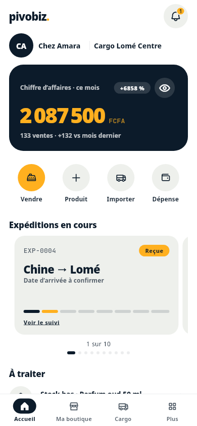
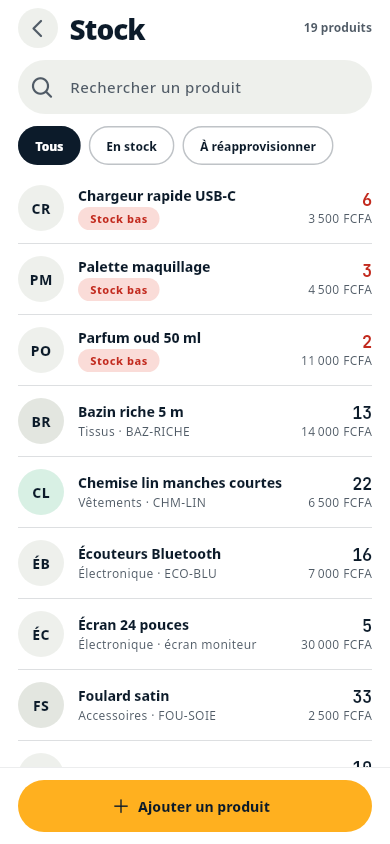
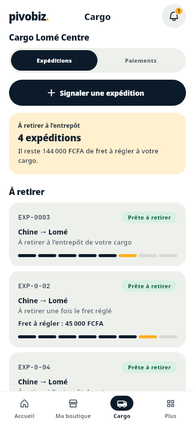
Back-office des sociétés de fret (Next.js)
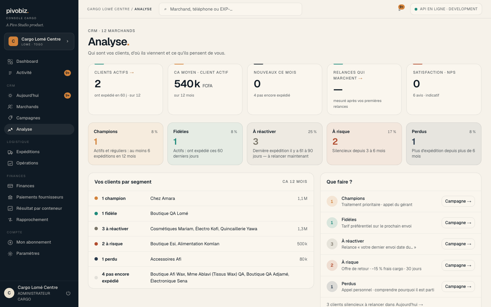
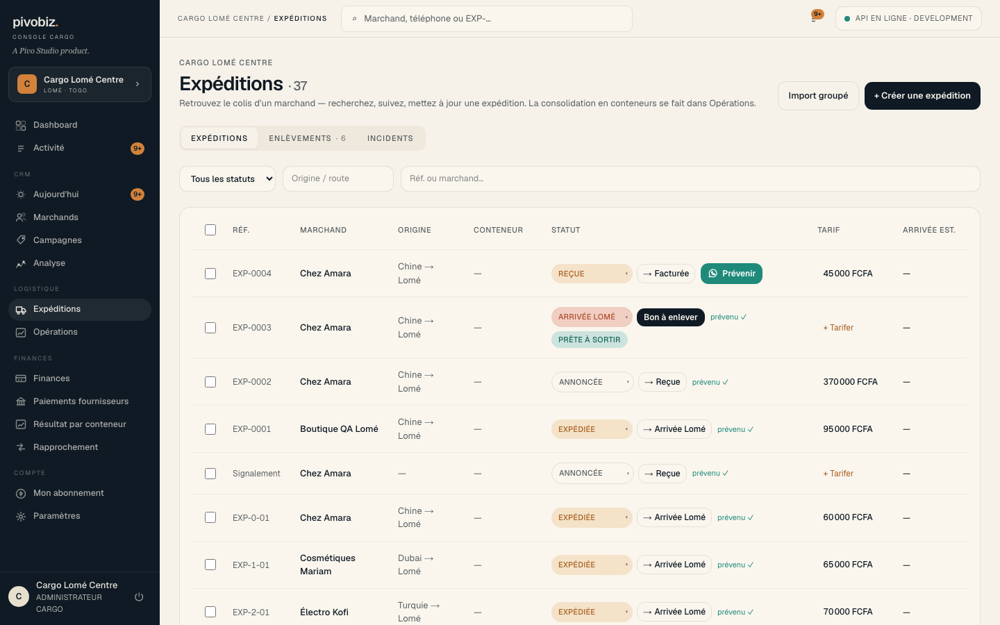
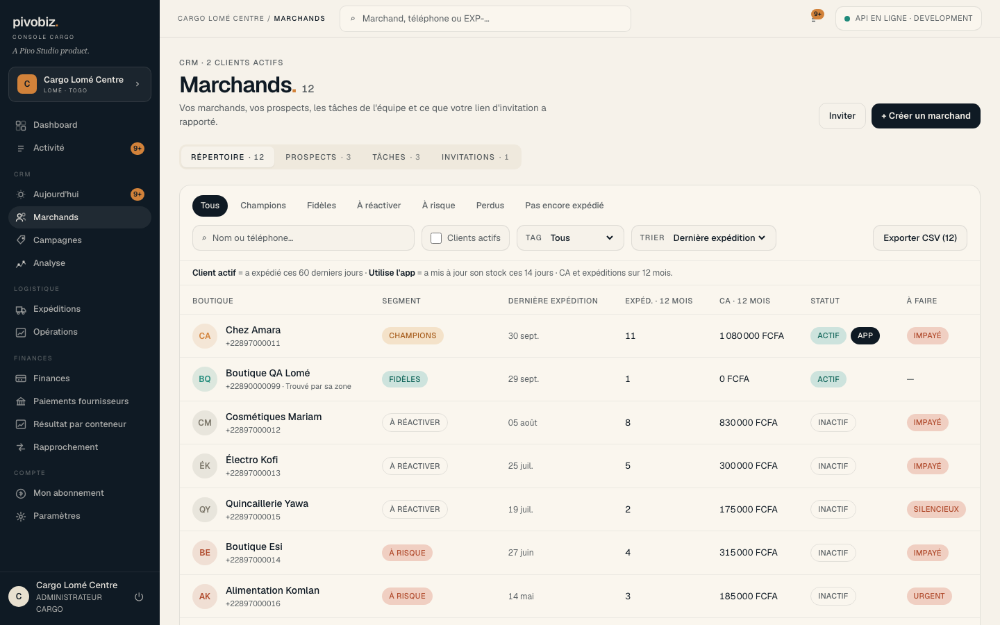
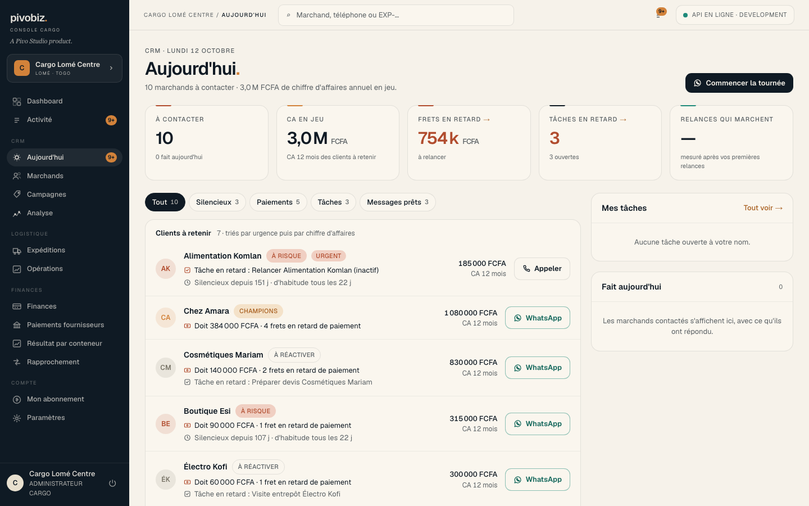
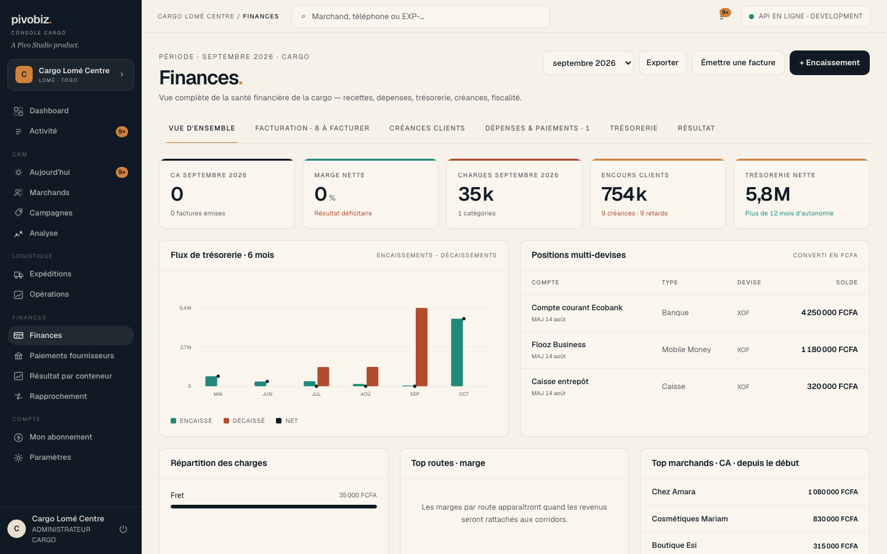
Marque affichée dans l'interface : « pivobiz », nom commercial du produit. Données de démonstration fictives.
Safi System
Plateforme de gestion de fret et d'entrepôts : réception des marchandises, chargement des conteneurs, facturation en USD/TZS, notifications aux clients.
- NestJS 11
- TypeORM
- PostgreSQL
- Redis
- BullMQ
- OpenTelemetry
- Twilio / WhatsApp
- Docker · PM2
Ce que j'ai fait
- Mono-entrepôt vers multi-entrepôts : données, tarifs et droits isolés par entrepôt, avec un chemin de migration non destructif.
- Race condition corrigée : deux scans à ~20 ms d'écart laissaient des marchandises « chargées » sans conteneur. Cause trouvée dans un motif de mise à jour peu fiable sous TypeORM, remplacé par des transactions et des mises à jour SQL atomiques. 6 enregistrements identifiés et restaurés par script, aucune donnée perdue.
- Traitements lourds sortis des requêtes : files BullMQ pour les campagnes SMS/WhatsApp et la synchro Google Sheets, cache Redis, traçabilité OpenTelemetry et journal d'audit avec contexte de requête.
Preuves
Apex Cargo Scanner
Application Flutter pour terminaux d'entrepôt : réception, vérification, stockage, chargement de conteneurs et impression d'étiquettes.
- Flutter
- Provider
- Dio
- Scanners matériels
- GitHub Actions
Ce que j'ai fait
- File de scan avec détection de doublons et reprises automatiques : absorbe les scans en rafale sans perte ni double chargement. Cache du plan de chargement pour limiter les appels réseau.
- Mise à jour automatique de l'APK et télémétrie d'usage envoyée par lots de 50 événements (3 Ko maximum chacun), qui alimente le tableau de supervision ci-dessous.
- Audit sécurité et performance (stockage des jetons, clés d'API, reconstructions inutiles), converti en plan de refactoring par phases.
Preuves
Apex Mobile App Manager
Plateforme de déploiement des versions Android sur la flotte de scanners, avec supervision de l'activité des opérateurs en temps réel.
- Next.js 16
- React 19
- Prisma 7
- PostgreSQL 16
- Redis
- Docker Compose
- Vitest
Ce que j'ai fait
- Distribution sécurisée : upload d'APK avec lecture du manifeste, stockage chiffré AES-256-GCM, clés d'API à portées, limitation de débit.
- Ingestion idempotente : lots de 200 événements maximum avec clé client unique, pour qu'un renvoi après coupure réseau ne double jamais les données.
- Détection d'anomalies sur le débit des opérateurs (inactivité en service, chute par rapport à une médiane glissante de 14 jours, grappes d'erreurs), avec cache Redis et verrou anti-requêtes concurrentes.
Preuves
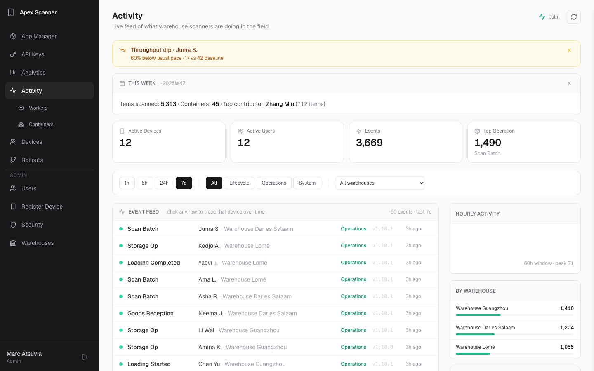
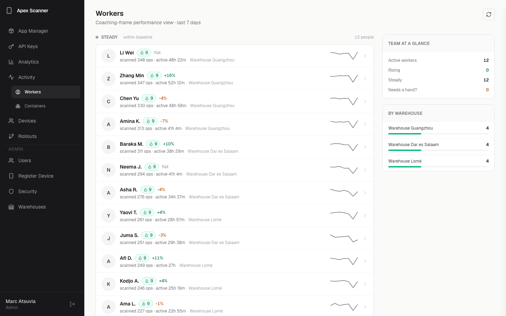
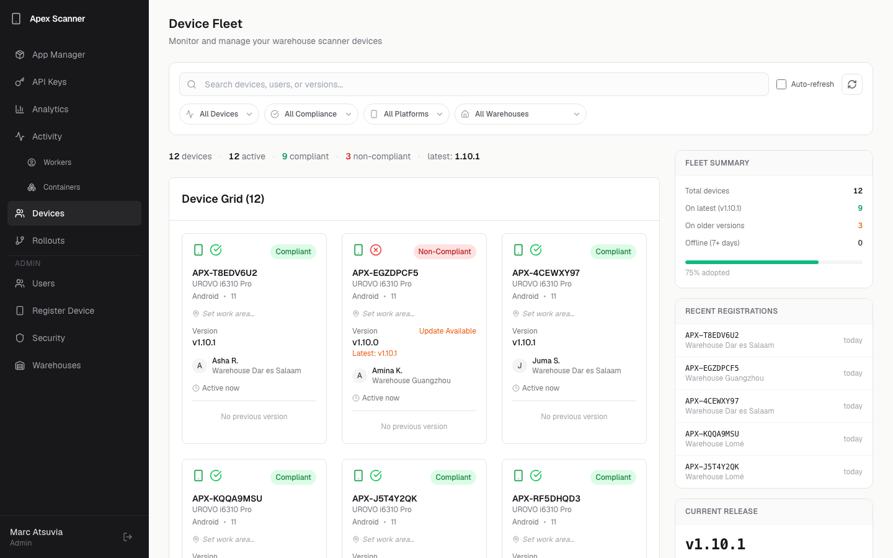
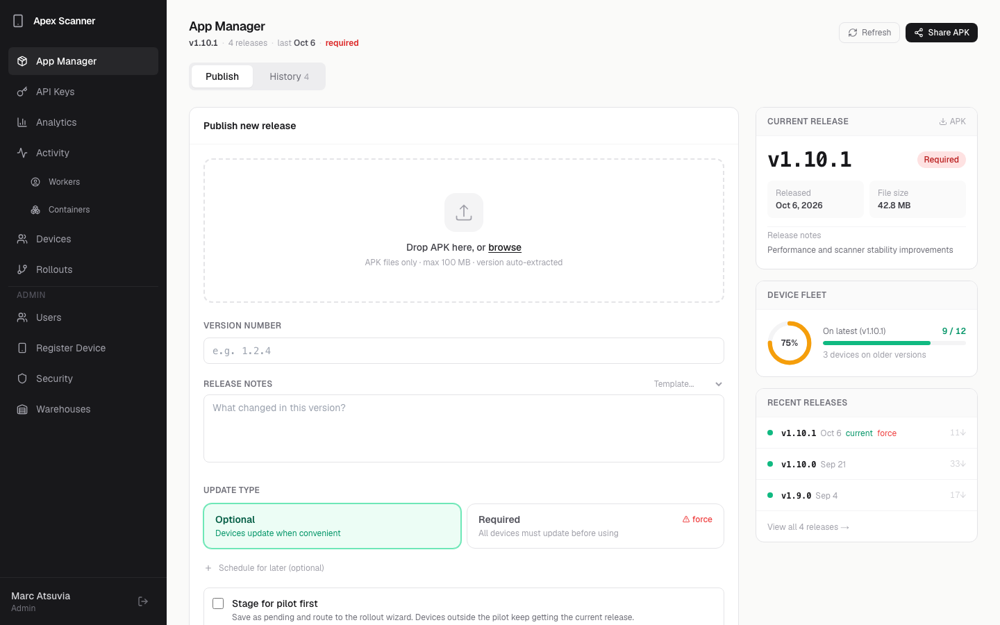
Laafi / Saton RDV
Réservation de rendez-vous médicaux : portail web, API et application mobile patient (français / anglais).
- Next.js 14
- NestJS
- Flutter
- Prisma
- PostgreSQL
- TanStack Query
- Socket.io
- Kafka
Ce que j'ai fait
- Modélisation du domaine médical : centres de santé, praticiens, disponibilités, types de consultation, évaluations, orientations.
- Réservation de bout en bout : recherche par spécialité, praticien et centre, créneaux selon les disponibilités, consultation au cabinet, en ligne ou à domicile, rappels et notifications temps réel, files de synchronisation.
- Audit du portail : ≈ 58 problèmes classés par gravité (dont 8 critiques) et plan de refonte : sécurité, duplication de code, requêtes inefficaces, poids des bundles.
Preuves
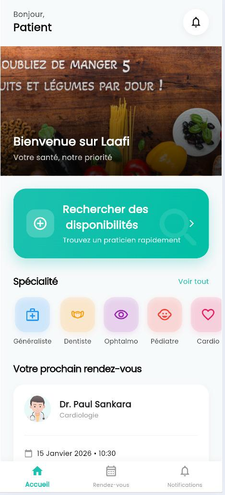
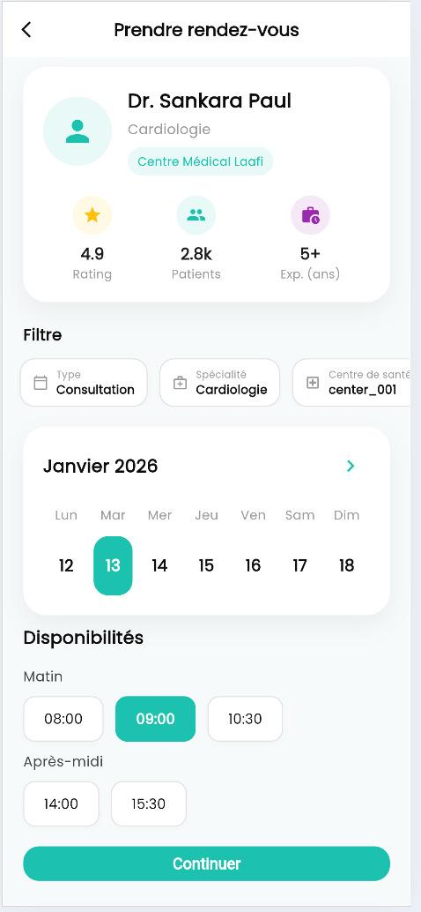
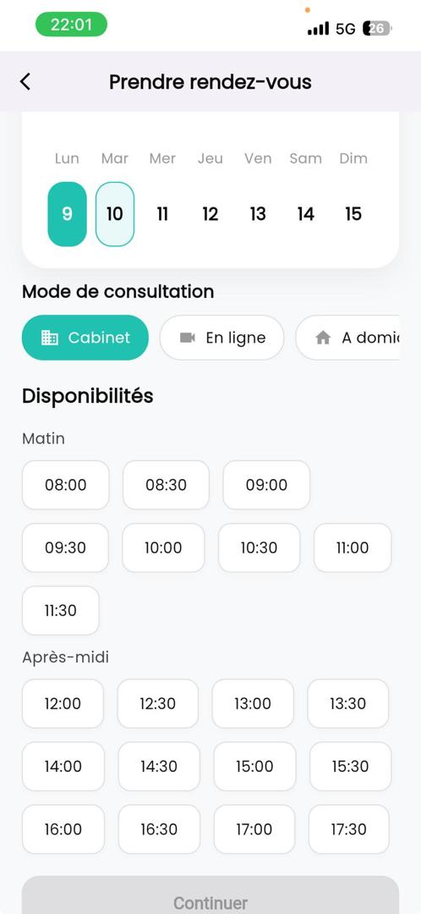
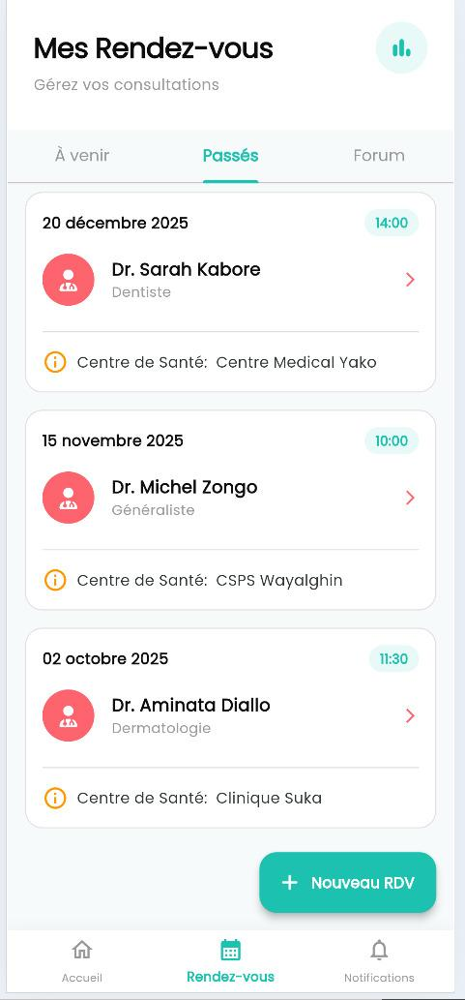
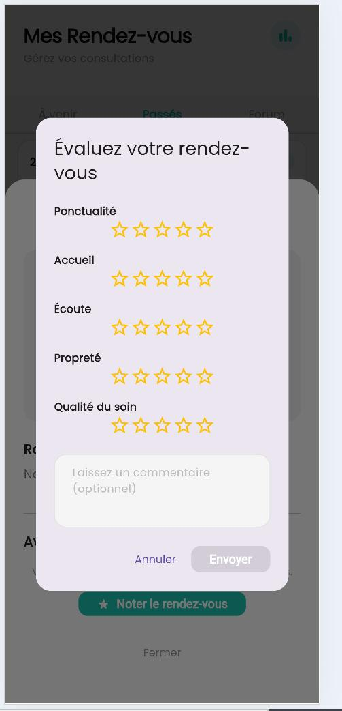
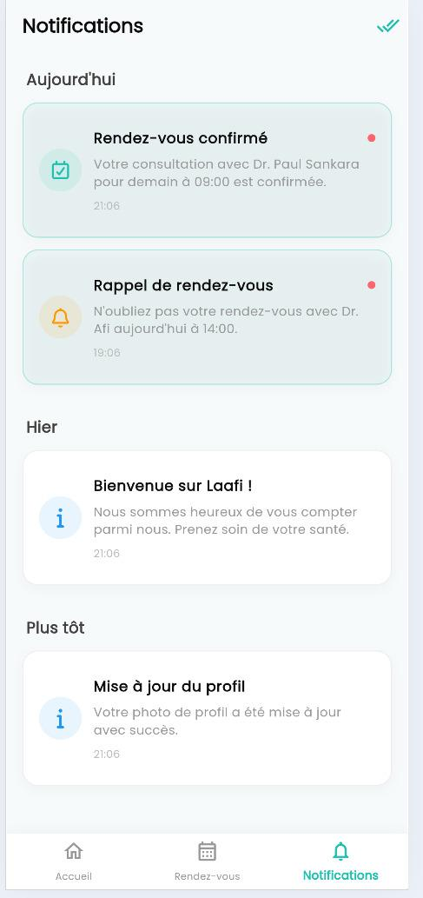
Autres projets
Outils personnels autour de l'IA, avec du code public ou disponible sur demande.
BeHireable
- Agent IA qui audite un profil GitHub ou des dépôts locaux, analyse une offre d'emploi et génère CV et lettre ciblés.
- Garde-fous contre l'invention : chaque affirmation doit citer une preuve du dépôt, sinon elle est rejetée ; red-teaming automatisé des sorties.
- Fournisseur d'IA interchangeable (CLI locaux, API, modèles locaux), suivi du coût par appel, CLI + web + extension navigateur.
SupportAI
- Chatbot de support RAG en français : recherche vectorielle par similarité cosinus, seuil de pertinence, sources et score de confiance avec chaque réponse.
- Renvoi vers un humain quand aucun passage fiable n'est trouvé, pour supprimer les réponses inventées.
- Code public sur GitHub · Next.js 15, TypeScript, Gemini.